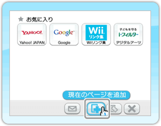
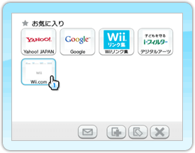
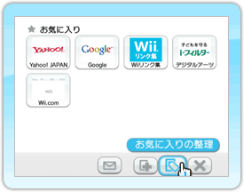
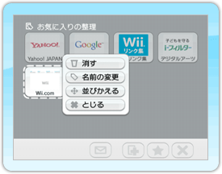
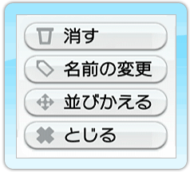
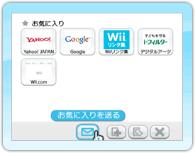
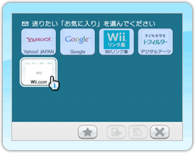
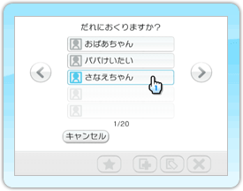
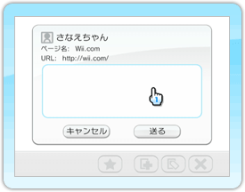

5
お気に入り
よく見るページを登録したり、登録済みのページを消去するなど、整理を行います。また、お気に入りのアドレスをWiiフレンドに送ることができます。
お気に入りのページを登録する場合
※お気に入りは56個まで登録することができます。
｢
｣または｢
｣を使って、ページを表示します。
｢｣をポイントし、を押してください。
お気に入り管理画面が表示されます。

｢｣をポイントし、を押してください。
登録完了です。

登録したページを表示する場合
登録後、｢｣をポイントし、を押してください。お気に入り管理画面が表示されます。
閲覧したいページをポイントし、を押してください。ページが表示されます。
登録されているページを整理する場合
｢｣をポイントし、を押してください。お気に入り管理画面が表示されます。

｢｣をポイントし、を押してください。お気に入り編集画面が表示されます。

整理したいページをポイントし、を押してください。編集項目が表示されます。

編集したい項目をポイントし、を押してください。
画面の指示に従って操作してください。
お気に入りのアドレスをWiiフレンドに送る場合
｢｣をポイントし、を押してください。お気に入り管理画面が表示されます。

｢
｣をポイントし、を押してください。画面の色が変わります。

送るお気に入りをポイントし、を押してください。アドレス帳画面が表示されます。

Wiiフレンドをポイントし、を押してください。メッセージ入力画面が表示されます。

メッセージを入力してください。
をポイントし、を押してください。